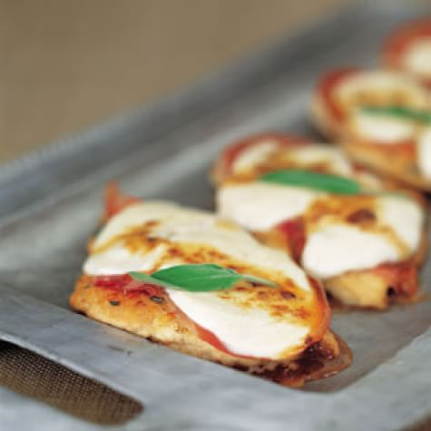

Chicken Saltimbocca

Decription
Chicken saltimbocca is an Italian dish that wraps chicken cutlets with prosciutto slices. Our chicken saltimbocca recipe uses chicken breasts to replace traditional veal, but the mouthwatering addition of prosciutto stays the same and makes the dish practically irresistible (saltimbocca means "jump into the mouth"). This dish goes great with side dishes of spinach and potatoes.
Ingredients
- 4 skinless chicken breast halves
- Kosher salt
- Freshly ground pepper
- 1/3 cup all-purpose flour
- 2 Tbs. unsalted butter
- 1 Tbs. extra-virgin olive oil
- 2 tsp. chopped fresh sage
- 2 large slices of prosciutto
- 1/4 lb. fresh mozzarella cheese
- 3/4 cup of dry white wine
Steps
- Season the Chicken: Season the chicken breasts with salt and pepper. Spread the flour on a plate and dredge each breast, coating evenly and shaking off the excess. Set aside.
- Cook the Chicken: In a large fry pan or sauté pan over medium-high heat, melt 1 Tbs. of the butter with the olive oil until very hot. Add the chicken breasts and cook until the undersides are golden brown, 5 to 6 minutes. Turn the chicken breasts over and continue to cook until they feel firm when pressed in the centers, 4 to 6 minutes more.
- Top the Chicken:Reduce the heat to very low. Sprinkle the breasts evenly with the chopped or dried sage. Top each breast with a piece of prosciutto, then divide the cheese slices evenly among the breasts. Cover the pan tightly and cook until the cheese is melted, about 1 1/2 minutes. Transfer to a serving platter and tent with aluminum foil, being careful not to allow the foil to touch the cheese.
- Deglaze the Pan:Increase the heat to high. When the pan is sizzling, add the wine and deglaze the pan, stirring to scrape up any browned bits stuck on the pan bottom. Boil until reduced to 1/4 cup, about 3 minutes. Remove from the heat and whisk in the remaining 1 Tbs. butter.
- Serve:Spoon an equal amount of the sauce over each breast, then garnish with a sage leaf. Serve immediately. Serves 4.